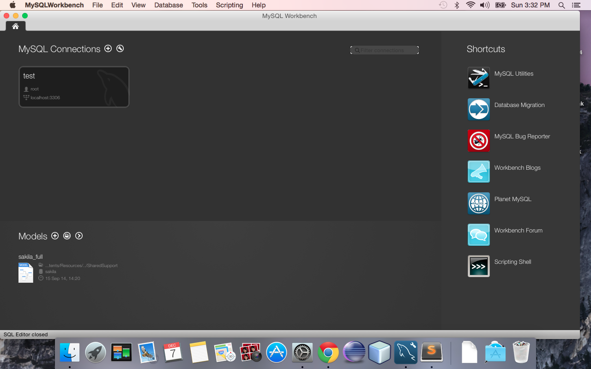
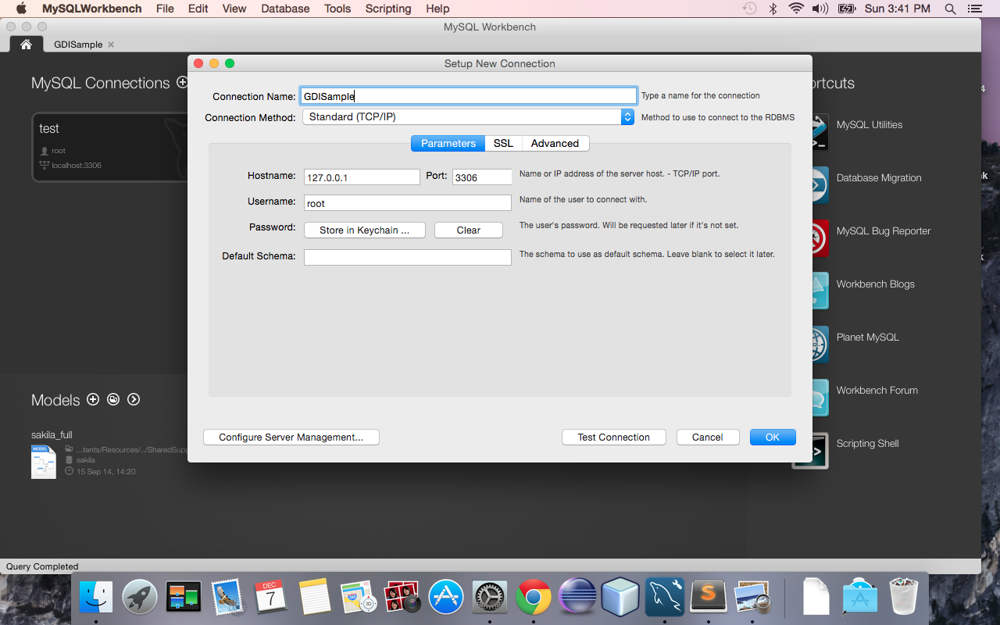
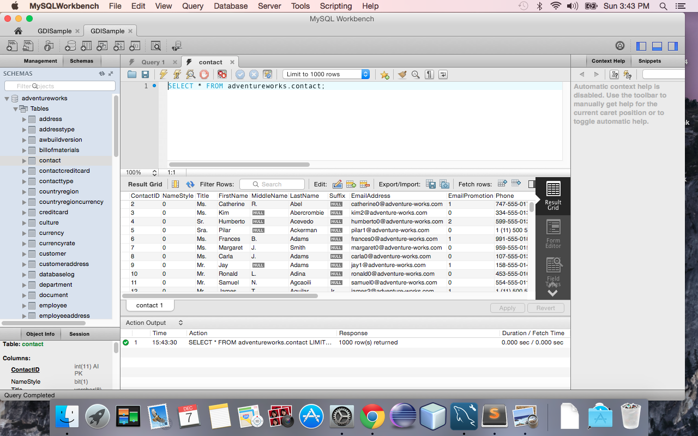
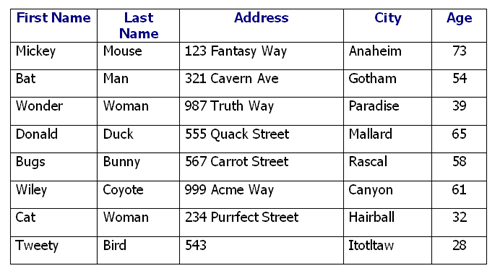

Introduction to Databases
Welcome!
Girl Develop It is here to provide affordable and accessible programs to learn software through mentorship and hands-on instruction.
Some "rules"
- We are here for you!
- Every question is important
- Help each other
- Have fun
Intro to SQL
- SQL - Structured Query Language
- Special purpose language for managing data in a RDBMS
- Main language to manipulate data in database platforms
- First introduced by Oracle in 1979
- SQL is an ANSI and ISO standard but there are different versions of SQL. All variations support the major commands in a similar manner.
- SQL is great to know, because it is everywhere.
What does SQL do?
- Execute queries against a database and retrieve information from a database
- Create a new database and create tables in that database
- Insert, update and delete records
- Create stored procedures and views
- Set permissions on database objects
Vendors that use SQL
- Microsoft SQL Server (T-SQL)
- Oracle (PL-SQL)
- Postgre SQL
- MySQL
- DB2 (IBM Product)
- Sybase
- Microsoft Azure
Why MySQL?
- Great platform to use for learning SQL
- Plenty of documentation and tutorials on learning SQL
- Widely used in the industry and easy to use with various applications
- It is open source
Installing MySQL
Mac & Windows
Download MySQL http://dev.mysql.com/downloads/mysql
Download the latest general availability release
Accept all the default settings (ex: port 3306; password: admin)
If you change the password from admin, please remember it (for this class, you are advised to leave it as admin)
Configuring MySQL
Mac & Windows
Can do this via the command line client or using the GUI
For this class, we will use the GUI
Download the MySQL GUI http://dev.mysql.com/downloads/workbench/
Accept all the defaults
Creating a connection
Open MySQL Workbench
Click on + sign to connect to an instance of MySQL
Creating a connection
MySQL GUI
Let's Develop It!
Download MySQL and MySQL workbench
Create a new connection to MySQL
The AdventureWorks Database
- An extensive sample database many SQL tutorials are based on
- Available for many popular RDBMS, including SQL Server, Oracle, MySQL, PostgreSQL, and SQLite
- Great for learning SQL and for practicing more advanced SQL operations
Let's Develop It!
Create a new connection to MySQL
Relational Databases
Pieces and parts of a relational database
- schema
- tables
- views
- relationships
- indexes
- functions
- stored procedures
- triggers
- server objects
- and other elements
A relational database consists of many different elements, some of which include:
Schema
Is a way to logically group database objects
Acts as a blueprint for how the database is constructed
In a relational database, the schema defines relationships, tables, fields in tables etc.
Default schema for many RDBMS is dbo
Tables
In a relational database, a table is an organized set of data using columns and rows.
You may sometimes hear a table referred to as a "relation".
Let's Develop It!
Spend a few minutes exploring SSMS
- Pair up with your neighbor and discuss what you find.
- View a few tables.
- What do you find in the Structure tab? What are some different data types you can find?
Data Manipulation Language (DML)
Used for manipulating data
- INSERT
- UPDATE
- DELETE
- MERGE
Data Definition Language (DDL)
Used for defining data
- CREATE
- DROP
- TRUNCATE
- ALTER
Data Control Language (DCL)
Used to control access to data
- GRANT
- REVOKE
Transaction Control Language (TCL)
Used to control transactional processing of data
- COMMIT
- SAVEPOINT
- ROLLBACK
- SET TRANSACTION (isolation level)
The SELECT Statement
- We use the SELECT command to show/query data from a database
- The output from a SELECT statement is always a grid of rows and columns.
- The most simple SELECT statement retrieves all values from a single table
SELECT columns FROM database
SELECT * FROM adventureworks.contact;
This will return all of the results from the table, which could be expensive. Don't use this in production!
SELECT DISTINCT
DISTINCT keyword is used to return only distinct values, if there are duplicate values
- SQL is not case sensitive
- Some database systems do require a semi colon after each SQL statement, MySQL does not
Note:
SELECT distinct FirstName FROM adventureworks.contact;
This will return a distinct list of first names from the contact table in the adventureworks db
The WHERE Clause
Returns a subset of rows filtered on the set criteria in the WHERE clause
SELECT .. WHERE statement can be made on one line:
SELECT * FROM adventureworks.contact where FirstName = "Catherine";WHERE Clause Operators
| Operator | Description |
| = | Equal |
| <> | Not equal. Note: In some versions of SQL, this may be written as != |
| > | Greater than |
| < | Less than |
| >= | Greater than or equal |
| <= | Less than or equal |
| BETWEEN | Between an inclusive range |
| LIKE | Search for a pattern (can use a wildcard character) |
| IN | To specify multiple possible values for a column |
Not Equal
SELECT * FROM adventureworks.contact WHERE FirstName <> "Catherine";
Greater Than
SELECT * FROM adventureworks.Employee WHERE BirthDate > "1970-01-01";
Less Than
SELECT * FROM adventureworks.Employee WHERE BirthDate < "1970-01-01";
BETWEEN
SELECT * FROM adventureworks.Employee WHERE BirthDate BETWEEN "1965-01-01" AND "1971-01-01";
LIKE
Uses the wildcard character
SELECT * FROM adventureworks.Track WHERE Name LIKE "%Love%";
Can use the character at the beginning or end of the word/phrase
SELECT * FROM adventureworks.Track WHERE Name LIKE "%Lo";
IN
SELECT * FROM adventureworks.currency WHERE CurrencyCode IN ('AFA', 'ZAR');
Let's Develop It!
- Spend some time writing SELECT statements with WHERE clauses
- Feel free to work with a neighbor!
- Practice Problems:
- Return all employees with a contact id of greater than 1200
- Return all contacts with a Last name of 'Smith'
- Return all employees with a title beginning with 'Production'
Resources
DML (Data Manipulation Language) Commands
We will now learn to insert, update, and delete objects in a database!
INSERT statement
INSERT INTO dbo.table1 VALUES x, y, z
INSERT INTO dbo.table1 SELECT col from dbo.table2Note: If there is an identity or primary key column on a table, you should omit that column from your insert statement
INSERT statement example
INSERT INTO adventureworks.currency VALUES ('PIP', 'Pippa', '2014-06-01 00:00:00');UPDATE statement
Is used to update or change the value of columns in selected row(s) of data
Use WHERE Clause to define your set or row to update
UPDATE example
UPDATE adventureworks.currencySET Name = 'PippaNew'WHERE CurrencyCode = 'PIP';DELETE statement
Is used to DELETE data from tables
Unlike TRUNCATE, DELETE is used when removing data based on a set of criteria
For UPDATE and DELETE statements, it is helpful to write the WHERE clause first to avoid unintended results
DELETE example
DELETE FROM adventureworks.currencyWHERE CurrencyCode = 'PIP';Let's Develop It!
Using the database you have created, practice inserting, updating and deleting records
Practice Problems
- Insert a row into the currency table with a code, name and modified date
- Update a row in the address table to change the City to 'Boulder' where the AddressLine1 is '1226 Shoe St.'
- Delete the row you inserted into the currency table
**Note: be aware of the data types you are inserting into the table!!
DDL (Data Definition Language) Commands
We will now learn to create, drop, truncate, and alter objects in a database!
CREATE statement
Can use CREATE to create a database, tables, views, stored procedures, indexes etc. (objects of a db)
To create a table, we need to give the table a name and define the columns with a name and datatype
Defining primary and foriegn keys as well as constraints and default values is an option here
CREATE example
CREATE TABLE IF NOT EXISTS dbo.Students
(ID int,
FirstName varchar(20),
LastName varchar(20),
BirthDate int,
ModifiedDate datetime);
DROP statement
Used to delete an object from a database
Be very cautious when using this command!
Cannot drop a table that does not exist, you will get an error
Can use IF EXISTS at the beginning of the statement
DROP TABLE dbo.CustomersTRUNCATE statement
Used to delete all the contents of object from a database
If all data should be removed from a table, TRUNCATE is a less expensive operation than DELETE
Again, be very cautious when using this command!
TRUNCATE TABLE dbo.CustomersALTER statement
Used to alter an object in database
Not all objects can be altered, this can be vendor specific
If an object cannot be altered, you can drop and recreate the object with the changes needed
ALTER example
ALTER TABLE dbo.StudentsADD Age int
Let's Develop It!
Create two tables in MySQL, a Student's table and an Activity table
Students table should have a StudentID, FirstName, LastName, BirthDate, ActivityID
Classes table should have an ActivityID, ActivityName
- Insert a few rows of data into each table
**Note: be aware of the data types you are inserting into the table!!
Constraints
Types:
- Primary Key
- Foreign Key
- Unique
- Not NULL
- Check
- Default
Limit the type of data that can be inserted into a table
Primary Key Contraints
Used as a unique indentifier for a row in a table
There is only one PK contraint allowed on a table
Can have more than one unique contraints
PK's become FK's when creating relations among tables
Primary Key Example
When creating a table:
- CREATE TABLE IF NOT EXISTS dbo.Students
- (int ID PRIMARY KEY,
- FirstName varchar(20),
- LastName varchar(20),
- BirthDate int,
- ModifiedDate datetime);
When altering a table:
- ALTER TABLE dbo.Students
- ADD PRIMARY KEY (ID)
Foreign Key Contraints
Points to a PK in another table
Enforces referential integrity
Foreign Key Example
When creating a table:
- CREATE TABLE IF NOT EXISTS dbo.Students
- (int ID PRIMARY KEY,
- PersonID int FOREIGN KEY REFERENCES Person(P_ID),
- FirstName varchar(20),
- LastName varchar(20),
- BirthDate int,
- ModifiedDate datetime);
Foreign Key Example
When altering a table:
- ALTER TABLE dbo.Students
- ADD FOREIGN KEY(P_ID)
- REFERENCES Person(ID)
Recap from yesterday
DML and DDL commands
Primary key and foreign keys
We will start with a few practice problems to reinforce the concepts
Let's Develop It!
Practice Problems:
- Return rows from the Department table where the Name includes the word 'Control' and where the DepartmentID is between 4 and 14
- Create a new table that replicates the existing SalesPerson table in the AdventureWorks DB. Insert all the rows from the existing SalesPerson table into the new SalesPerson table
Let's Develop It!
Practice Problems:
- Update the row in the Vendor table to change the name of the vendor to 'American Bikes in Boulder' where the AccountNumber is 'AMERICAN0002'
- Update the vendor table to set the ActiveFlag to 0 where the VendorID is greater than 8 but less than or equal to 11
Unique Contraints
Ensures that all data in a column is unique
Primary key constraints automatically have unique constraints defined
Unique constraints may include multiple columns to guarantee uniqueness
Unique Contraint Example
When creating a table:
- CREATE TABLE IF NOT EXISTS dbo.Students
- (int ID PRIMARY KEY,
- FirstName varchar(20),
- LastName varchar(20),
- BirthDate int,
- ModifiedDate datetime,
- UNIQUE (ID));
Unique Contraint Example
When altering a table:
- ALTER TABLE dbo.Students
- ADD UNIQUE (ID)
Not NULL Contraints
A column with this type of constraint cannot containt NULL values
Not NULL Example
When creating a table:
- CREATE TABLE IF NOT EXISTS dbo.Students
- (int ID NOT NULL,
- FirstName varchar(20),
- LastName varchar(20),
- BirthDate int NOT NULL,
- ModifiedDate datetime)
Let's Develop It!
Create a unique constraint on your second Activity table you created yesterday. Create the unique constraint on the ID column
Create a not null constraint on the Store table. The constraint should be on the Name column.
Check Contraints
Imposes a validation on the value being added or updated in a column
Check Contraint Example
When creating a table
- CREATE TABLE IF NOT EXISTS dbo.Students
- (int ID NOT NULL,
- FirstName varchar(20),
- LastName varchar(20),
- BirthDate int NOT NULL,
- ModifiedDate datetime,
- CHECK (ID>0)
Check Contraint Example
When altering a table
- ALTER TABLE dbo.Students
- ADD CHECK (ID>0)
Default Contraints
Inserts the specified default value when no column value is provided
Inserts the specified default value when the inserted or updated value meets a certain criteria
For example: If the value inserted is 0, default the column value to 1
Default Contraint Example
When creating a table
- CREATE TABLE IF NOT EXISTS dbo.Students
- (int ID NOT NULL,
- FirstName varchar(20),
- LastName varchar(20),
- BirthDate int NOT NULL,
- ModifiedDate datetime DEFAULT GETDATE())
Default Contraint Example
When altering a table
- ALTER TABLE IF NOT EXISTS dbo.Students
- ALTER COLUMN LastName SET DEFAULT 'Smith'
Let's Develop It!
Add a check constraint to the Students and the Activity table to check the StudentID and the ActivityID respectively, are greater than 0
Add a default constraint to the Students table and set the LastName column to default to 'Unknown'
Let's Develop It!
Create a table of your choice
Be cognizant of the datatypes you give you columns
Bonus: Add a primary key constraint to your table during creation!
Joins
The SQL JOIN clause combines records from two or more tables in a database. You will primarly use two types of joins, with some variations on these.
Inner Joins
Outer Joins
Left and Right Joins
Cross Joins
INNER JOIN
Selects records that match Table A and Table B
Is the default join type in many RDBMS systems

INNER JOIN Example
SELECT p.ProductID, p.Name, p.ListPrice, sd.UnitPrice
FROM adventureworks.Product p
JOIN adventureworks.SalesOrderDetail sd ON p.ProductID = sd.ProductID
WHERE p.ProductID = 718;
Let's Develop It!
Write a query, using an inner join, that returns the employeeID, loginID, and addressID where the employeeId is greater than or equals to 12 (Hint: you will use the employees and employeeaddress tables!)
Full Outer Join
Returns all sets of records in Table A and Table B
Records from both sides are included, where available.
If there is no matching record, the missing side will have a null value.
Full outer joins are not supported in MySQL but you can emulate them by unioning a right and left join
Full Outer Join

Left Join
Produces all records from TableA, with matching records from TableB if they are available.
If there is no matching record in TableB, the right side will have a null value.
Left Join Example
SELECT Customers.CustomerName, Orders.OrderID
FROM Customers
LEFT JOIN Orders
ON Customers.CustomerID=Orders.CustomerID
Returns all the rows from the left table (Customers), even if there are no matches in the right table (Orders).
Left Join Example
SELECT C.Customerid, O.addressid
FROM adventureworks.customer c
LEFT JOIN adventureworks.customeraddress o
on c.customerid = o.customerid
Returns all the rows from the left table (Customers), even if there are no matches in the right table (Customer Address).
Left Join

Right Join
Produces all records from the right table, with matching records from TableA if they are available.
If there is no matching record in TableA, the left side will have a null value.
Cross Join
Produces a result set which is the product of rows of two associated tables when no WHERE clause is used with CROSS JOIN.
Multiplies the each row in the first table with each row in the second table.
The result is known as a Cartesian Product.
There are very few situations where this would be used.
Cross Join Example
SELECT C.Customerid, O.addressid
FROM adventureworks.customer c
CROSS JOIN adventureworks.customeraddress o
Returns all the rows from the left table (Customers), even if there are no matches in the right table (CustomerAddress).
Let's Develop It!
- Return a list of first names in the students table that have a match in the activity table (hint, use an inner join)
- Return a list of first names and activity ids (from the activity table) using a left join from students to activity. Notice how some records that do not have a match in the activity table return NULL
- Cross join the store table with the state province table.
Ordering Data
Data from a SELECT statement can be ordered with the ORDER BY clause.
Default ordering is ascending
Can explicitly add asc or desc
ORDER BY Example
SELECT *
FROM adventureworks.Employee
ORDER BY BirthDate DESC
GROUP BY
Data from a SELECT statement can be grouped with the GROUP BY clause.
Can group by more than one column
Be aware of the order you group columns in
GROUP BY Example
SELECT count(*), Title
FROM adventureworks.Employee
GROUP BY Title
Let's Develop It!
- Get a count of the employeeID's and the loginID's and group the list by the ManagerID (Employee table)
- Order the results by ManagerID descending
- Return a count of the department id and the group name, grouped by group name from the department table
Functions in SQL
Will vary by vendor
Aggregate, Datetime, User defined etc.
Aggregate Functions
count(*)
count(x)
sum(x)
avg(x)
Date Functions
count(x)
sum(x)
avg(x)
Core Functions
abs()
max()
min()
length()
ltrim()
rtrim()
Let's Develop It!
- Find the average unit price of sale orders (from the SalesOrderDetail table) when the unit price is greater than $200.00 but less than $1000.00
- Find the sum of sales orders (from the SalesOrderDetail table) where the order quantity is equal to 1
- Return the Name and the length of the the Name column in the ProductCategory table
- Return the total count of all rows in the ProductlistPriceHistory table
Advanced Topics
Stored Procedures
Are a sequence of instructions (SQL Statements) that perform a task and are stored in a single execution plan
Available to pplications that access relational database systems
Used for extensive and/or complex operations that involve multiple SQL statements
Advanced Topics
Indexes
Indexes reduces the number of database pages that have to be visited/scanned
Used to enhance query performance
Can be thought of as a pointer to data in a table (much like an index of a book)
Can only have one clustered index per table (determines the physical order of a table)
The clustered index is the table
Can have many non clustered indexes per table
Advanced Topics
Triggers
Triggers are database operations that are automatically performed when a specific event occurs in your database.
Among other things, triggers often used to insert records into log tables when changes are made to data.
Creating triggers is beyond the scope of this class, but know they exist.
Advanced Topics
Transaction Level Operations
A transaction is an atomic unit of database operations.
The effect of a transaction is that either all of the SQL statements in a transaction are committed to the database, or all of them are rolled back (no changes).
A transaction begins with the BEGIN TRANSACTION statement, followed by COMMIT or ROLLBACK.
Transactions are beyond the scope of this class, but good to learn if you are dealing with a group of changes that are "all or nothing".
More Practice
SQL Zoo
http://sqlzoo.net/wiki/SQL_Tutorial